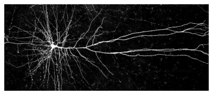
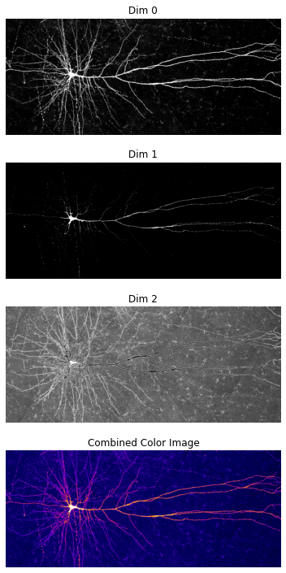

Topic 22: Linear Algebra#
04/28921
onl01-dtsc-ft-022221
Announcements#
Recurring One on Ones Resume Next Week
If you’re not sure if you have one and/or when yours is scheduled for, please message me.
If you don’t currently have a recurring one on one but would like to, please message me.
We have our Cohort Phase 2 Project Presentation Sharing session tomorrow at 4 pm EST
Sharing is optional!
Make sure to check the new “Notes from James” page at the start of topics 25,26,27,32.
Summary is: topic 25 will be 2-study groups.
Topic 27 and 32 are combined into 1 study group.
Topic 26 is a bit redundant and includes more gradient descent from scratch labs.
Learning Objectives#
Be able to explain the difference(s) between vectors, matrices, tensors, etc. and their dimensionality.
Understand the the difference between the shape and size of an array
Discuss linear algebra operations with numpy
Learn about using linear algebra to solve systems of equations
Simple linear algebra regression analysis
Questions/Comments?#
Jump to
codealong-linear-algebra-regression.ipynbfor answer to gdoc question
Resources:#
Videos (added to Canvas Topic 22 Supplemental Videos):
www.desmos.com (linear equation grapher)
What & Why of Linear Algebra#
### What is Linear Algebra?
Study of “vector spaces” with linear relationships.
Uses vectors, matrices, and tensors
Used in lots of ML applications
Different Tensors#
Scalars, Vectors, Matrices: It’s all about the dimension#

Why Linear Algebra?#
Representing data as a N-dimensional tensor is used in many areas of Machine Learning.
Images are 3-D tensors.#

Natural Language Processing Represents text using matrices#

Dimensionality Reduction (PCA)#

Artificial Neural Networks#

Creating with NumPy#
# Imports needed for this notebook
import numpy as np
import matplotlib.pyplot as plt
import matplotlib as mpl
def show_matrix(matrix ,name='matrix'):
"""Prints the name and shape of the matrix and displays the matrix"""
print(f'{name} (shape={matrix.shape}):')
display(matrix)
print('\n')
# Scalar
s = np.arange(1)
display(s)
array([0])
# Vector
v = np.arange(4)
show_matrix(v,'v')
v (shape=(4,)):
array([0, 1, 2, 3])
print(v)
[0 1 2 3]
# Other ways to define vector
x = np.linspace(-np.pi, np.pi, 10)
show_matrix(x,'x')
x (shape=(10,)):
array([-3.14159265, -2.44346095, -1.74532925, -1.04719755, -0.34906585,
0.34906585, 1.04719755, 1.74532925, 2.44346095, 3.14159265])
# Matrix
M0 = np.arange(8)
show_matrix(M0,'M0')
M = np.arange(8).reshape((4, 2))
show_matrix(M,"M")
M0 (shape=(8,)):
array([0, 1, 2, 3, 4, 5, 6, 7])
M (shape=(4, 2)):
array([[0, 1],
[2, 3],
[4, 5],
[6, 7]])
# 3D Tensor
n = 24
T_3d = np.arange(n).reshape((4, 2, 3))
show_matrix(T_3d,'T_3d')
T_3d (shape=(4, 2, 3)):
array([[[ 0, 1, 2],
[ 3, 4, 5]],
[[ 6, 7, 8],
[ 9, 10, 11]],
[[12, 13, 14],
[15, 16, 17]],
[[18, 19, 20],
[21, 22, 23]]])
Indexing with NumPy#

Different parts of a vector#
show_matrix(v,'v')
v (shape=(4,)):
array([0, 1, 2, 3])
# For Vectors
display(v[1:4]) # second to fourth element.
display(v[::2]) # every other element
display(v[:]) # print the whole vector
display(v[::-1]) # reverse the vector!
array([1, 2, 3])
array([0, 2])
array([0, 1, 2, 3])
array([3, 2, 1, 0])
Different parts of a matrix#
show_matrix(M)
matrix (shape=(4, 2)):
array([[0, 1],
[2, 3],
[4, 5],
[6, 7]])
## Entire first row of matrix
M[0]
array([0, 1])
# first row and all columns
display(M[0, :])
array([0, 1])
# element at first row and first column
display(M[0, 0])
0
# elemenet last row and last column
display(M[-1, -1])
7
# all rows and first column
display(M[:, 0])
array([0, 2, 4, 6])
# all rows and all columns
display(M[:])
array([[0, 1],
[2, 3],
[4, 5],
[6, 7]])
Different parts of a tensor#
show_matrix(T_3d,'T_3d')
T_3d (shape=(4, 2, 3)):
array([[[ 0, 1, 2],
[ 3, 4, 5]],
[[ 6, 7, 8],
[ 9, 10, 11]],
[[12, 13, 14],
[15, 16, 17]],
[[18, 19, 20],
[21, 22, 23]]])
show_matrix(T_3d[0]) # 2D: First matrix
matrix (shape=(2, 3)):
array([[0, 1, 2],
[3, 4, 5]])
show_matrix(T_3d[3])
matrix (shape=(2, 3)):
array([[18, 19, 20],
[21, 22, 23]])
display(T_3d[0, 0]) # 1D: First matrix's first vector
array([0, 1, 2])
display(T_3d[0,0, 0]) # 0D: First matrix's first vector's first element
0
display(T_3d[0, 0,0]) # 1D: first matrix, first vector, all elements
0
display(T_3d)
array([[[ 0, 1, 2],
[ 3, 4, 5]],
[[ 6, 7, 8],
[ 9, 10, 11]],
[[12, 13, 14],
[15, 16, 17]],
[[18, 19, 20],
[21, 22, 23]]])
display(T_3d[0, :, 0]) # 1D: first matrix, all the vectors, just the fist element
array([0, 3])
display(T_3d[0, :, 1:]) # 1D: first matrix, all the vectors, all elements after the first
array([[1, 2],
[4, 5]])
Example 3D Tensor - An Image#
## Color Images Are 3d Matrices/Tensors
img = 'images/neuron.jpg'
IMG =mpl.image.imread(img)
## Image is a 1220 x 2880 pixel color image
show_matrix(IMG)
matrix (shape=(1220, 2880, 3)):
array([[[ 5, 0, 103],
[ 3, 0, 96],
[ 1, 0, 89],
...,
[ 2, 0, 78],
[ 2, 0, 83],
[ 2, 0, 87]],
[[ 6, 1, 103],
[ 4, 0, 97],
[ 2, 0, 90],
...,
[ 2, 0, 75],
[ 2, 0, 80],
[ 2, 0, 82]],
[[ 6, 2, 99],
[ 4, 0, 95],
[ 2, 0, 92],
...,
[ 1, 0, 70],
[ 1, 0, 72],
[ 1, 0, 74]],
...,
[[ 4, 0, 94],
[ 4, 0, 93],
[ 4, 0, 93],
...,
[ 0, 0, 92],
[ 0, 0, 92],
[ 1, 0, 93]],
[[ 8, 1, 104],
[ 7, 1, 101],
[ 5, 0, 97],
...,
[ 0, 0, 92],
[ 1, 0, 94],
[ 2, 1, 95]],
[[ 10, 3, 109],
[ 8, 1, 105],
[ 6, 0, 100],
...,
[ 1, 0, 93],
[ 2, 1, 95],
[ 3, 1, 98]]], dtype=uint8)
## image is made of 3 channels of 1220 x 2880 pixels
[print(IMG[:,:,i].shape) for i in range(3)];
(1220, 2880)
(1220, 2880)
(1220, 2880)
## Visualizing a single channel (dim) of image
show_matrix(IMG[:,:,0],'Dim 0')
plt.imshow(IMG[:,:,0],'gray')
plt.axis('off')
Dim 0 (shape=(1220, 2880)):
array([[ 5, 3, 1, ..., 2, 2, 2],
[ 6, 4, 2, ..., 2, 2, 2],
[ 6, 4, 2, ..., 1, 1, 1],
...,
[ 4, 4, 4, ..., 0, 0, 1],
[ 8, 7, 5, ..., 0, 1, 2],
[10, 8, 6, ..., 1, 2, 3]], dtype=uint8)
(-0.5, 2879.5, 1219.5, -0.5)

## View All Channels
fig, ax = plt.subplots(nrows=4,figsize=(5,10))
ax[0].imshow(IMG[:,:,0],cmap= 'gray')
ax[0].set_title("Dim 0")
ax[1].imshow(IMG[:,:,1],cmap='gray')
ax[1].set_title("Dim 1")
ax[2].imshow(IMG[:,:,2],cmap='gray')
ax[2].set_title("Dim 2")
ax[3].imshow(IMG)
ax[3].set_title('Combined Color Image')
[a.axis('off') for a in ax]
plt.tight_layout()

Basic Properties#
Shape#
Can help us know the dimensions and size
print('Scalar:')
s = np.array(100)
display(s)
display(s.shape)
display(s.size)
Scalar:
array(100)
()
1
V = np.array([0, 1, 2, 3])
V.reshape(-1,3)
---------------------------------------------------------------------------
ValueError Traceback (most recent call last)
<ipython-input-54-3978e89b0f9d> in <module>
1 V = np.array([0, 1, 2, 3])
----> 2 V.reshape(-1,3)
ValueError: cannot reshape array of size 4 into shape (3)
print('Vector:')
display(v)
display(v.shape)
display(v.size)
Vector:
array([0, 1, 2, 3])
(4,)
4
print('Matrix:')
display(M)
display(M.shape)
display(M.size)
Matrix:
array([[0, 1],
[2, 3],
[4, 5],
[6, 7]])
(4, 2)
8
M.shape[0]
4
import fsds as fs
df = fs.datasets.load_mod1_proj()
df
| id | date | price | bedrooms | bathrooms | sqft_living | sqft_lot | floors | waterfront | view | ... | grade | sqft_above | sqft_basement | yr_built | yr_renovated | zipcode | lat | long | sqft_living15 | sqft_lot15 | |
|---|---|---|---|---|---|---|---|---|---|---|---|---|---|---|---|---|---|---|---|---|---|
| 0 | 7129300520 | 10/13/2014 | 221900.0 | 3 | 1.00 | 1180 | 5650 | 1.0 | NaN | 0.0 | ... | 7 | 1180 | 0.0 | 1955 | 0.0 | 98178 | 47.5112 | -122.257 | 1340 | 5650 |
| 1 | 6414100192 | 12/9/2014 | 538000.0 | 3 | 2.25 | 2570 | 7242 | 2.0 | 0.0 | 0.0 | ... | 7 | 2170 | 400.0 | 1951 | 1991.0 | 98125 | 47.7210 | -122.319 | 1690 | 7639 |
| 2 | 5631500400 | 2/25/2015 | 180000.0 | 2 | 1.00 | 770 | 10000 | 1.0 | 0.0 | 0.0 | ... | 6 | 770 | 0.0 | 1933 | NaN | 98028 | 47.7379 | -122.233 | 2720 | 8062 |
| 3 | 2487200875 | 12/9/2014 | 604000.0 | 4 | 3.00 | 1960 | 5000 | 1.0 | 0.0 | 0.0 | ... | 7 | 1050 | 910.0 | 1965 | 0.0 | 98136 | 47.5208 | -122.393 | 1360 | 5000 |
| 4 | 1954400510 | 2/18/2015 | 510000.0 | 3 | 2.00 | 1680 | 8080 | 1.0 | 0.0 | 0.0 | ... | 8 | 1680 | 0.0 | 1987 | 0.0 | 98074 | 47.6168 | -122.045 | 1800 | 7503 |
| ... | ... | ... | ... | ... | ... | ... | ... | ... | ... | ... | ... | ... | ... | ... | ... | ... | ... | ... | ... | ... | ... |
| 21592 | 263000018 | 5/21/2014 | 360000.0 | 3 | 2.50 | 1530 | 1131 | 3.0 | 0.0 | 0.0 | ... | 8 | 1530 | 0.0 | 2009 | 0.0 | 98103 | 47.6993 | -122.346 | 1530 | 1509 |
| 21593 | 6600060120 | 2/23/2015 | 400000.0 | 4 | 2.50 | 2310 | 5813 | 2.0 | 0.0 | 0.0 | ... | 8 | 2310 | 0.0 | 2014 | 0.0 | 98146 | 47.5107 | -122.362 | 1830 | 7200 |
| 21594 | 1523300141 | 6/23/2014 | 402101.0 | 2 | 0.75 | 1020 | 1350 | 2.0 | 0.0 | 0.0 | ... | 7 | 1020 | 0.0 | 2009 | 0.0 | 98144 | 47.5944 | -122.299 | 1020 | 2007 |
| 21595 | 291310100 | 1/16/2015 | 400000.0 | 3 | 2.50 | 1600 | 2388 | 2.0 | NaN | 0.0 | ... | 8 | 1600 | 0.0 | 2004 | 0.0 | 98027 | 47.5345 | -122.069 | 1410 | 1287 |
| 21596 | 1523300157 | 10/15/2014 | 325000.0 | 2 | 0.75 | 1020 | 1076 | 2.0 | 0.0 | 0.0 | ... | 7 | 1020 | 0.0 | 2008 | 0.0 | 98144 | 47.5941 | -122.299 | 1020 | 1357 |
21597 rows × 21 columns
df.shape
(21597, 21)
df[['price']].shape
(21597, 1)
np.
df[['price']].values.shape
(21597, 1)
print('3D Tensor:')
print(T_3d)
display(T_3d.shape)
display(T_3d.size)
3D Tensor:
[[[ 0 1 2]
[ 3 4 5]]
[[ 6 7 8]
[ 9 10 11]]
[[12 13 14]
[15 16 17]]
[[18 19 20]
[21 22 23]]]
(4, 2, 3)
24
Transpose#

## Transpose of a matrix
show_matrix(M,'M')
Mt = M.T
show_matrix(Mt,'M.T')
M (shape=(4, 2)):
array([[0, 1],
[2, 3],
[4, 5],
[6, 7]])
M.T (shape=(2, 4)):
array([[0, 2, 4, 6],
[1, 3, 5, 7]])
## Transpose of a Transpose is Original
show_matrix(Mt,'Mt')
MtT = Mt.T
show_matrix(MtT,'Mt.T')
show_matrix(M,'M')
Mt (shape=(2, 4)):
array([[0, 2, 4, 6],
[1, 3, 5, 7]])
Mt.T (shape=(4, 2)):
array([[0, 1],
[2, 3],
[4, 5],
[6, 7]])
M (shape=(4, 2)):
array([[0, 1],
[2, 3],
[4, 5],
[6, 7]])
## Proving they're equal
(M.T.T == M).all()
True
Combining Tensors#
Note: NumPy is pretty smart when you combine tensors; it will attempt to combine even if the dimensions don’t match. This is called broadcasting & you can read about it in the documentation (https://docs.scipy.org/doc/numpy/user/basics.broadcasting.html)[https://docs.scipy.org/doc/numpy/user/basics.broadcasting.html].
# A = np.arange(6).reshape(3,2)
# B = 10 * A
# show_matrix(A,'A')
# show_matrix(B,'B')
Addition#
A = np.arange(6).reshape(3,2)
B = 10 + np.arange(6).reshape(3,2)
show_matrix(A,'A')
show_matrix(B,'B')
A (shape=(3, 2)):
array([[0, 1],
[2, 3],
[4, 5]])
B (shape=(3, 2)):
array([[10, 11],
[12, 13],
[14, 15]])
# We can add up the same dimensions! (elementwise)
A + B
array([[10, 12],
[14, 16],
[18, 20]])
(A + B).shape
(3, 2)
# Broadcasting: We can even add scalars to the whole array (as you might expect)
A + 100
array([[100, 101],
[102, 103],
[104, 105]])
What happens when we have different dimensions? Broadcasting happens#
# 3-by-2 add 1-by-2
x = 100*np.arange(2).reshape(2)
show_matrix(x,'x')
x (shape=(2,)):
array([ 0, 100])
show_matrix(A,'A')
A (shape=(3, 2)):
array([[0, 1],
[2, 3],
[4, 5]])
## Broadcasted [0,100] across A
show_matrix(A + x)
matrix (shape=(3, 2)):
array([[ 0, 101],
[ 2, 103],
[ 4, 105]])
# 3-by-2 add 3-by-2
A = np.arange(6).reshape(3,2)
show_matrix(A,'A')
A (shape=(3, 2)):
array([[0, 1],
[2, 3],
[4, 5]])
# 3-by-2 add 2-by-3 --> Will this work?
x = 100*np.arange(2*3).reshape(2,3)
show_matrix(x,'x')
x (shape=(2, 3)):
array([[ 0, 100, 200],
[300, 400, 500]])
show_matrix(A,'A')
A (shape=(3, 2)):
array([[0, 1],
[2, 3],
[4, 5]])
display(A + x)
---------------------------------------------------------------------------
ValueError Traceback (most recent call last)
<ipython-input-72-4b524e76c6cb> in <module>
----> 1 display(A + x)
ValueError: operands could not be broadcast together with shapes (3,2) (2,3)
Multiplication (Hadamard Product & Dot Product)#
Hadamard Product a.k.a. Element-wise multiplication#
\(C = A \circ B\)
The Hadamard product can be calculated in Python using the \(*\) operator between two NumPy arrays:
Result:
Each element in A is multiplied by its corresponding element (same row/column) as B
Same dimensions (after broadcasting)
show_matrix(A,'A')
show_matrix(B,'B')
A (shape=(3, 2)):
array([[0, 1],
[2, 3],
[4, 5]])
B (shape=(3, 2)):
array([[10, 11],
[12, 13],
[14, 15]])
## use * for hadamard product
C = A*B
show_matrix(C,'C')
C (shape=(3, 2)):
array([[ 0, 11],
[24, 39],
[56, 75]])
# 3-by-2 add 1-by-2
show_matrix(A,'A')
x = 100*np.arange(2).reshape(2)
show_matrix(x,'x')
A (shape=(3, 2)):
array([[0, 1],
[2, 3],
[4, 5]])
x (shape=(2,)):
array([ 0, 100])
## will broadcast if same # of columns
C = A * x
show_matrix(C,'C')
C (shape=(3, 2)):
array([[ 0, 100],
[ 0, 300],
[ 0, 500]])
# # 3-by-2 add 3-by-2
# show_matrix(A,'A')
# x = 100*np.arange(3*2).reshape(3,2)
# show_matrix(x,'x')
# C = A * x
# show_matrix(C,'C')
# 3-by-2 add 2-by-3 --> Will this work?
show_matrix(A,'A')
x = x = 100*np.arange(3*2).reshape(2,3)
show_matrix(x,'x')
A (shape=(3, 2)):
array([[0, 1],
[2, 3],
[4, 5]])
x (shape=(2, 3)):
array([[ 0, 100, 200],
[300, 400, 500]])
C = A * x
show_matrix(C,'C')
---------------------------------------------------------------------------
ValueError Traceback (most recent call last)
<ipython-input-82-4d333fbddac3> in <module>
----> 1 C = A * x
2 show_matrix(C,'C')
ValueError: operands could not be broadcast together with shapes (3,2) (2,3)
Dot Product#
Kahn Academy: Intro to Matrix Multiplication
Result: (m-by-n) DOT (n-by-p) ==> (m-by-p)
Likely the most common operation when we think of “multiplying” matrices.
Matrix \(A\) has \(m\) rows and \(n\) columns
Matrix \(B\) has \(n\) rows and \(k\) columns.
Provided the \(n\) columns in \(A\) and \(n\) rows in \(B\) are equal, the result is a new matrix with \(m\) rows and \(k\) columns.
The dot product can be shown using (.) or (dot).
\( C_{(m, k)} = A_{(m, n)} \cdot B_{(n, k)}\) OR \( C_{(m, k)} = A_{(m, n)} \text{ dot } B_{(n, k)}\)
The product operation is defined by
The intuition for the matrix multiplication is that you calculate the dot product between each row in matrix \(A\) with each column in matrix \(B\).
show_matrix(A,'A')
show_matrix(B,'B')
show_matrix(B.T,'B.T')
A (shape=(3, 2)):
array([[0, 1],
[2, 3],
[4, 5]])
B (shape=(3, 2)):
array([[10, 11],
[12, 13],
[14, 15]])
B.T (shape=(2, 3)):
array([[10, 12, 14],
[11, 13, 15]])
C = A.dot(B.T)
show_matrix(C,'C')
C (shape=(3, 3)):
array([[ 11, 13, 15],
[ 53, 63, 73],
[ 95, 113, 131]])
## Multiple ways for dot-product
Z = np.dot(A, B.T)
Z = A.dot(B.T)
Z = A @ B.T
show_matrix(Z,'Z')
Z (shape=(3, 3)):
array([[ 11, 13, 15],
[ 53, 63, 73],
[ 95, 113, 131]])
Manipulating Matrices (Identity & Inverse)#
Identity Matrix#
Square matrix of diagonal 1’s, rest are 0’s
I5 = np.identity(5)
print(I5)
[[1. 0. 0. 0. 0.]
[0. 1. 0. 0. 0.]
[0. 0. 1. 0. 0.]
[0. 0. 0. 1. 0.]
[0. 0. 0. 0. 1.]]
When multiplying (dot product), you always get the same matrix (note that still has be compatible shape)
A = np.arange(25).reshape(5,5)
show_matrix(A,'A')
A (shape=(5, 5)):
array([[ 0, 1, 2, 3, 4],
[ 5, 6, 7, 8, 9],
[10, 11, 12, 13, 14],
[15, 16, 17, 18, 19],
[20, 21, 22, 23, 24]])
IA = I5.dot(A)
show_matrix(IA,'IA')
IA (shape=(5, 5)):
array([[ 0., 1., 2., 3., 4.],
[ 5., 6., 7., 8., 9.],
[10., 11., 12., 13., 14.],
[15., 16., 17., 18., 19.],
[20., 21., 22., 23., 24.]])
AI = A.dot(I5)
show_matrix(AI,'AI')
AI (shape=(5, 5)):
array([[ 0., 1., 2., 3., 4.],
[ 5., 6., 7., 8., 9.],
[10., 11., 12., 13., 14.],
[15., 16., 17., 18., 19.],
[20., 21., 22., 23., 24.]])
(IA==AI).all()
True
Inverse Matrix#
Remember that we can’t divide by a matrix, but we can do something similar by finding an inverse matrix
# Define two arrays
X = np.array([1,-2,3,2,-5,10,0,0,1]).reshape(3,3)
show_matrix(X,'X')
X (shape=(3, 3)):
array([[ 1, -2, 3],
[ 2, -5, 10],
[ 0, 0, 1]])
We can also find the inverse of a matrix with NumPy
# A = np.array([4,2,1,4,8,3,1,1,0]).reshape(3,3)
# Finding the inverse matrix
X_inv = np.linalg.inv(X)
show_matrix(X_inv,'X_inv')
X_inv (shape=(3, 3)):
array([[ 5., -2., 5.],
[ 2., -1., 4.],
[ 0., 0., 1.]])
# Note the rounding
X_X_inv = X.dot(X_inv)
show_matrix(X_X_inv,'X_X_inv')
X_X_inv (shape=(3, 3)):
array([[1., 0., 0.],
[0., 1., 0.],
[0., 0., 1.]])
However, not all matrices have an inverse
A = np.arange(9).reshape(3,3)
show_matrix(A,'A')
inv_A = np.linalg.inv(A)
show_matrix(inv_A)
A (shape=(3, 3)):
array([[0, 1, 2],
[3, 4, 5],
[6, 7, 8]])
---------------------------------------------------------------------------
LinAlgError Traceback (most recent call last)
<ipython-input-95-444382616c5d> in <module>
1 A = np.arange(9).reshape(3,3)
2 show_matrix(A,'A')
----> 3 inv_A = np.linalg.inv(A)
4 show_matrix(inv_A)
<__array_function__ internals> in inv(*args, **kwargs)
/opt/anaconda3/envs/learn-env/lib/python3.6/site-packages/numpy/linalg/linalg.py in inv(a)
545 signature = 'D->D' if isComplexType(t) else 'd->d'
546 extobj = get_linalg_error_extobj(_raise_linalgerror_singular)
--> 547 ainv = _umath_linalg.inv(a, signature=signature, extobj=extobj)
548 return wrap(ainv.astype(result_t, copy=False))
549
/opt/anaconda3/envs/learn-env/lib/python3.6/site-packages/numpy/linalg/linalg.py in _raise_linalgerror_singular(err, flag)
95
96 def _raise_linalgerror_singular(err, flag):
---> 97 raise LinAlgError("Singular matrix")
98
99 def _raise_linalgerror_nonposdef(err, flag):
LinAlgError: Singular matrix
A.dot(A.T)
array([[ 5, 14, 23],
[ 14, 50, 86],
[ 23, 86, 149]])
New heading#
Solving Systems of Equations#
Solving a system of equations can take a lot of work
But we can make it easier by writing it in matrix form
Our X-values for all 3 eqns are [1,2,0]
Our y-values for all 3 eqns are [-2,-5,0]
Our z-vales for all 3 eqns are [3,10,6]
Our outcomes for each eqn are [9,4,0]
Below, each row of the matrix (A) contains an X,y,Z.
The dot product of matrix A and vector [x,y,z] will produce the outcomes [9,4,0]. $\( \begin{pmatrix} 1 & -2 & 3 \\ 2 & -5 & 10 \\ 0 & 0 & 6 \end{pmatrix} \cdot \begin{pmatrix} x \\ y \\ z \end{pmatrix} = \begin{pmatrix} 9 \\ 4 \\ 0 \end{pmatrix} \)$
Using NumPy#
# Define the system's matrices
# eqn = [x,y,z]
eqn1 = np.array([1,-2,3])
eqn2 = np.array([2,-5,10])
eqn3 = np.array([0,0,6])
A = np.stack([eqn1,eqn2,eqn3])#,axis=None)
show_matrix(A,'A')
B = np.array([9,4,0]).reshape(3,1)
show_matrix(B,'B')
# Find the inverse
A_inv = np.linalg.inv(A)
show_matrix(A_inv,'A_inv')
# Solutions:
solution = A_inv @ B
show_matrix(solution,'solution')
~~Activity 1: Solving Systems of Linear Equations with NumPy- Lab ~~ [SKIPPED]#
Exercise 1#
A coffee shop is having a sale on coffee and tea.
On day 1, 29 bags of coffee and 41 bags of tea were sold, for a total of 490 dollars.
On day 2, they sold 23 bags of coffee and 41 bags of tea, for which customers paid a total of 448 dollars.
How much does each bag cost?
# Create and solve the relevant system of equations
## solve with numpy.linalg.solve
# ## long way
# A_inv = np.linalg.inv(A)
# X = A_inv.dot(B.T)
# show_matrix(X)
Exercise 3#
You want to make a soup containing tomatoes, carrots, and onions.
Suppose you don’t know the exact mix to put in, but you know there are 7 individual pieces of vegetables,
and there are twice as many tomatoes as onions, and that the 7 pieces of vegetables cost 5.25 USD in total.
You also know that onions cost 0.5 USD each, tomatoes cost 0.75 USD and carrots cost 1.25 USD each.
Create a system of equations to find out exactly how many of each of the vegetables are in your soup.
Exercise 4#
A landlord owns 3 properties: a 1-bedroom, a 2-bedroom, and a 3-bedroom house.
The total rent he receives is 1240 USD.
He needs to make some repairs, where those repairs cost 10% of the 1-bedroom house’s rent. The 2-bedroom repairs cost 20% of the 2-bedroom rental price and 30% of the 3-bedroom house’s rent for its repairs.
The total repair bill for all three houses was 276 USD.
The 3-bedroom house’s rent is twice the 1-bedroom house’s rent.
How much is the individual rent for three houses?
## write out eqn
#
N = np.matrix([1240, 276, 0])
N
np.linalg.solve(M, N.T)
Linear Regression with OLS#
We’ll find that this is actually computationally expensive for large systems 😭
Ordinary Least Squares#
Ordinary least squares tells us that our linear regression equation can be represented as the sum of a linear term and an error term:
To solve for the best estimate of \(\beta\), we are going to assume that on average, the error is equal to 0, thus:
To solve for \(\beta\), we need to make \(X\) into a square matrix by multiplying both sides of the equation from the left by \(X^T\) :
Now we have a square matrix that with any luck has an inverse, which we will call \((X^T X)^{-1}\).
Multiply both sides from the left by this inverse, and we have
It turns out that a matrix multiplied by its inverse is the identity matrix \((X^{-1} X)= I\):
You know that \(I\beta= \beta\).
So, if you want to solve for \(\beta\) (that is, remember, equivalent to finding the values \(m\) and \(b\) in this case), you find that:
Find \(\beta\) using Ordinary Least Squares.
Resources for Linear Algebra behind OLS#
The Linear Algebra of Least Squares Regression
Must first understand vector projection to be satisfied by their answer.
Jump to
codealong-linear-algebra-regression.ipynbfor question